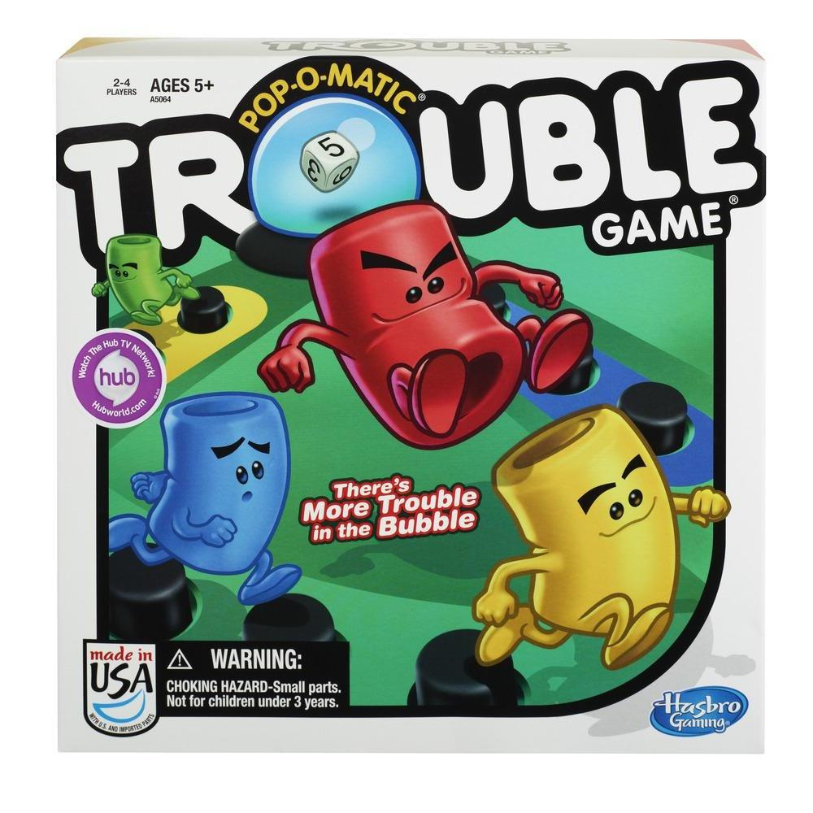
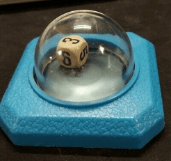

Trouble! Page
Trouble! The Board Game

Publishing Info
- Published by: Hasbro, Milton Bradley Company
- Developed by: The Kohner Brothers
- Released: 1965 (58 years ago)
Description
Trouble (known as Frustration in the UK and Kimble in Finland) is a family board game in which 2-4 players compete to be the first to send four
pieces all the way around a board. Pieces are moved according to the roll of a die using a contained device called a "Pop-O-Matic".
Games can usually take around 45 minutes to copmlete. It is called trouble due to the frustrating randomness of the game as the players'
fate is in the hands of a dice roll in the Pop-O-Matic.

Game Categories
- Genre: Children's Game
- Age Range: Family
- Game Type: Board Game
Quote
However, it improves upon the original, in my opinion, by virtue of simplification and shortening,
and is now rendered what it should have been recognized as all along: a children's game.
While the decisions to be made are limited, there is enough strategy here to engage beginning gamers,
and the delightful fun of the pop-o-matic makes even the roll-and-move mechanics charming for parents and other patient adults impressed into a game.
View the Review here: See the Quote